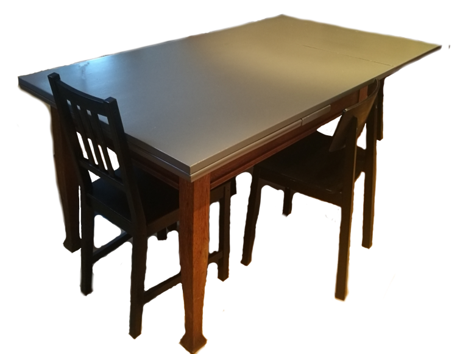

Bord

Foto: Øystein Krogstie
Skrivemåte
BordUttale: IPA
[bu:r]Uttale: opptak av Bor
Bor
Foto: foto.samfundet.no
Skrivemåte
BorUttale: IPA
[bo:r]Uttale: opptak av Bor
Om sia
Formålet med denne sia er å gi veiledning i uttalen av navnet til Bor. Dette gjør vi med vanlig ortografi, mer eller mindre vaklende forsøk på å bruke det internasjonale fonetiske alfabetet, illustrasjoner og lydopptak. Eventuelle alternative uttaleformer er skrevet i parantes bak hoveduttalen. Transkriberingen av hoveduttalen følger konvensjonen etablert i bl.a. Norsk Akademis ordbok og Norsk Uttaleordbok når det gjelder tegnet "r", som vi lar representere både ett og flere tungeslag samt tjukk l og sånt. Det viktigste her er tross alt vokalforskjellen mellom de to ordene.
Har du inspill til transkriberinga eller noe anna på denne sida? Send inn en issue på GitHub så tar vi en titt på det